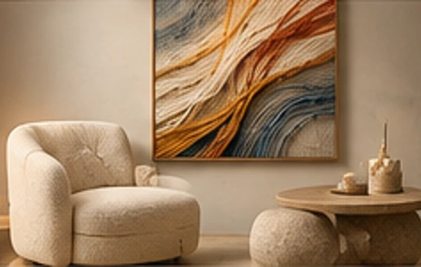

KATYA KNIT — авторские картины из нитей
KATYA KNIT / 001
СМОТРЕТЬ КОЛЛЕКЦИЮПЯТЬ ИЗБРАННЫХ РАБОТ
Искусство в деталях.
01 / THE APPROACH
Встреча материала и эмоции.
Искусство, которое хочется почувствовать.
02 / CURATED SELECTION
Избранное.
Пять художественных концепций. Пять состояний. Каждое — со своим движением и тишиной.

01 / 05
Поток
Движение материала
02 / 05
Круг
Непрерывность формы
03 / 05
Связь
Диалог линий
04 / 05
Пересечение
Геометрия чувств
05 / 05
Волна
Свобода движения
03 / ART IN SPACEКогда пространство
Когда пространство
обретает характер.
Живопись, которую хочется рассматривать с расстояния и изучать вблизи. Каждая работа становится частью своего пространства.
Работа для вашего интерьера ↗Мы верим в искусство, которое не требует объяснений.
Оно просто остаётся с вами.
05 / ДИАЛОГИскусство
Искусство
для вашего пространства.
Авторская работа может начаться с одной идеи.
Начать разговор ↗Контакты студии будут подключены перед публикацией.